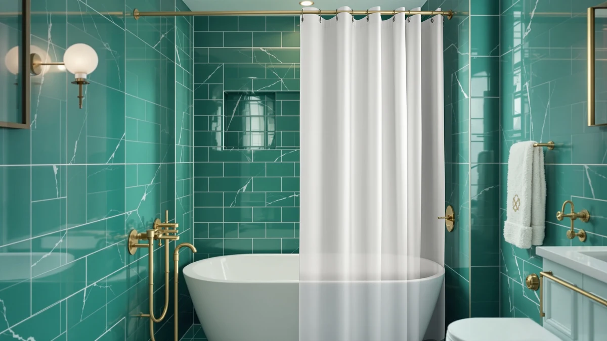

Shower Curtain Effect: Why It Happens and How to Stop It (2026)
Prices and picks verified as of October 2026. Independent, reader-supported reviews.


Things to Know Before You Buy
- The shower curtain effect comes from a pressure drop created by rising warm air and moving water, not from a specific curtain brand or fabric.
- Weighted hems and sewn-in magnets are the two fixes verified owners report working most consistently.
- A curved shower rod adds several inches of clearance and cuts down how far a curtain has to travel before it touches you.
- Fabric and vinyl curtains both billow, though heavier fabric blends resist the pull better than thin vinyl liners.
- Running a bathroom exhaust fan during a shower lowers the pressure difference that drives the effect in the first place.
The shower curtain effect is the sudden pull that drags a thin liner against your arms and legs right after you turn the water on, and it has a clear physical cause rather than a design flaw you can blame on one bad curtain. Hot water striking the tub floor heats the air trapped between the curtain and the shower wall, and that warm air rises and escapes over the rod while cooler air rushes in below to replace it. The resulting pressure difference pushes the curtain inward until it touches your skin, and the taller and hotter the shower, the stronger that pull becomes.
We compared the physics behind this problem with the fixes that shower curtain and liner brands actually build into their products, and we read through hundreds of verified owner reviews to see which solutions held up through months of regular showers rather than a single demo photo. Weighted hems, magnetic strips, and curved rods all came up again and again as the fixes owners trusted most.
If you want the short version, a curtain with a magnetized, weighted hem like the THAIGEE pick below solves most of the problem on its own, and pairing it with a slightly curved rod handles the rest. Keep reading for the physics behind the pull, the curtain types that hold up best against it, and the upkeep that keeps a fix working past the first few weeks.
What You Need to Know
The shower curtain effect follows a predictable sequence. When hot water hits the tub or shower floor, it heats the air directly above it, and that warm air expands and rises toward the ceiling. Inside an enclosed shower stall, that rising air has to escape somewhere, and it typically exits over the top of the curtain rod. As the warm air leaves, it lowers the air pressure inside the enclosure relative to the air pressure in the rest of the bathroom.
Air moves from high pressure to low pressure, so cooler bathroom air rushes in to fill that gap. Because the curtain hangs along the open edge of the shower, it acts like a sail caught between the two pressure zones, and the incoming air pushes the bottom and sides of the curtain inward until fabric or vinyl meets skin. The hotter the water and the more enclosed the stall, the bigger that pressure gap becomes, which is why the shower curtain effect feels stronger in a small bathroom with the door shut than in a large, well-ventilated one.
Curtain weight plays a direct role here too. A light vinyl liner has almost nothing holding it in place against moving air, while a heavier fabric or a curtain with a weighted hem resists that same pressure difference simply because it takes more force to move it. Owners who switch from a thin liner to a weighted one consistently report less billowing within the first few showers, which lines up with the physics rather than contradicting it.
Types and Categories
Fixes for the shower curtain effect generally fall into four categories, and most shower curtains on the market borrow from at least one of them.
Weighted-hem curtains sew small weights, usually plastic or metal beads, into the bottom seam. The added mass keeps the lower half of the curtain anchored even as air pressure shifts, though the top half can still flutter if the rest of the curtain is lightweight.
Magnetic-hem curtains and liners place small magnets inside the hem so the fabric clings to the side of the tub or a metal strip on the wall. This category tends to perform best against the pulling motion itself, since the magnet actively resists being dragged away from the tub rather than relying on weight alone.
Curved rods change the geometry of the problem instead of the curtain. By bowing outward several inches, a curved rod gives the curtain more room to travel before it reaches your body, so even a curtain that still billows never quite makes contact.
Double-curtain systems, where a plain liner hangs inside a decorative outer curtain, add a second layer of mass and friction between the water and the open bathroom, which slows down how quickly air can rush in to fill the pressure gap.
Fabric weight itself forms a fourth, less obvious category. Heavier woven fabrics, like waffle-weave cotton blends, resist the shower curtain effect through sheer density even without magnets or sewn-in weights, which is why many of the curtains that perform well in owner reviews are also described as heavy or substantial.
How to Choose
Start with weight. Check the product listing for fabric weight in GSM (grams per square meter) if it is fabric, or material thickness if it is vinyl or PEVA. Curtains in the 180 to 300 GSM range consistently show up in owner reviews as resistant to the shower curtain effect, while anything under about 100 GSM tends to move with the slightest draft.
Look at the hem construction next. A listing that mentions "weighted hem," "magnetic hem," or "magnetized corners" is telling you directly how the curtain plans to fight billowing. If the listing says nothing about the hem, assume it is a plain unweighted edge and budget for an add-on fix like magnetic clips.
Measure your tub or stall before you buy. A curtain that is too narrow for the opening leaves gaps at the sides where air rushes through fastest, which makes the pressure difference worse rather than better. Standard openings run 60 inches, but walk-in and curbless showers often need a wider or extra-long curtain to close those gaps.
Consider your rod shape. A straight rod sitting directly above a standard tub gives a curtain almost no slack, so even a heavy curtain can brush against you during a deep breath or a step forward. A curved rod, which typically costs less than $30, buys extra inches of clearance without requiring you to replace the curtain at all.
Decide whether you need a liner and a decorative curtain or just one piece. A single fabric curtain that already resists water looks cleaner, but a liner paired with an outer curtain gives you two independent layers to stop the pull, and you can replace the liner on its own once it loses its weighting or starts to mildew.
Read reviews that specifically mention the shower curtain effect or billowing rather than general star ratings, since a curtain can earn high marks for looks while still clinging to every shower.
Common Mistakes to Avoid
The most common mistake is buying a curtain based on print or color alone and ignoring weight entirely. A beautiful lightweight curtain will still suffer from the shower curtain effect no matter how well it matches your tile, so weight and hem construction should factor into the decision before pattern does.
Skipping hooks is another frequent error. Using too few hooks, or spacing them unevenly, leaves slack sections of curtain that catch more air and billow harder than a curtain hung with a full, even set of hooks or rings.
Many people also hang a curtain on a straight rod directly above a full-size tub without realizing a curved rod exists specifically to solve this problem. The straight rod puts the curtain inches from your body before the shower even starts, so any amount of inward pull is enough to make contact.
Ignoring ventilation compounds the issue. Running the bathroom exhaust fan, or cracking a window where climate allows, reduces the pressure difference that pulls the curtain in the first place, yet many owners never connect the fan to the billowing they experience.
People often replace a curtain entirely when a cheaper magnetic clip or a replacement weighted liner would have fixed the pull. If your curtain's print still looks good and only the hem has gone flat or the magnets have worn out, a small add-on usually solves the shower curtain effect faster than a full replacement.
Care and Maintenance
A curtain that resists the shower curtain effect when new can lose that resistance over time, so maintenance matters as much as the initial purchase.
Wash fabric curtains according to the care label, typically on a cold, gentle cycle, and skip the dryer's high heat setting, which can warp sewn-in weights or loosen magnets from their pockets. Air-drying on the rod itself keeps the hem's shape intact and avoids shrinking fabric that was sized to clear the tub.
Wipe down vinyl and PEVA liners with a diluted vinegar solution every couple of weeks to prevent the mildew buildup that eventually stiffens or warps the material. A warped liner loses its flat hang and billows more, not less, as it degrades.
Check magnetic hems periodically by running your hand along the bottom edge. If magnets have shifted inside their fabric pockets or fallen out entirely, the curtain will start pulling inward again even though it looks unchanged from the outside. Small sew-in magnet strips, sold separately, can replace lost ones without buying a new curtain.
Replace weighted beads or magnets as soon as you notice renewed billowing rather than waiting for the whole curtain to wear out. Owners who stay ahead of this maintenance report years of consistent performance from curtains that would otherwise need replacing within a season.
Our Top Picks
These three picks cover the fixes verified owners credit most often for stopping the shower curtain effect: an all-in-one weighted and magnetized curtain, a budget pick that still gets the hem right, and a heavyweight waffle weave that resists the pull through fabric density alone.

Editor’s Pick
THAIGEE 2-in-1 Waterproof Fabric Shower
Combines a weighted hem with sewn-in magnets, the two fixes owners mention most often for stopping the pull, in a single fabric curtain.
$12.99
Check Price on Amazon
Best Value
Gelbchu Grey Blend Geometric Shower
A weighted hem at a lower price point. Owners report noticeably less billowing than typical budget curtains in this range.
$9.99
Check Price on Amazon
Premium Choice
Barossa Design Waffle Weave Shower
A dense waffle-weave cotton blend that resists the shower curtain effect through fabric weight alone, plus magnetized corners for extra hold.
$16.19
Check Price on AmazonWhat exactly causes the shower curtain effect?
Hot water heats the air trapped inside the shower, and that warm air rises and escapes over the curtain rod.
Does a curved shower rod actually stop the curtain from clinging?
A curved rod does not stop the air pressure change that causes the shower curtain effect, but it bows the curtain several inches further away from your body, so the same amount of inward pull no longer reaches your skin.
Frequently Asked Questions
What exactly causes the shower curtain effect?
Hot water heats the air trapped inside the shower, and that warm air rises and escapes over the curtain rod. As it leaves, the air pressure inside the shower drops below the pressure in the rest of the bathroom, and cooler air rushing in to equalize that gap pushes the curtain inward until it touches you.
Does a curved shower rod actually stop the curtain from clinging?
A curved rod does not stop the air pressure change that causes the shower curtain effect, but it bows the curtain several inches further away from your body, so the same amount of inward pull no longer reaches your skin. Pairing a curved rod with a weighted or magnetic hem addresses both the cause and the symptom.
Are magnetic shower curtains better than weighted ones?
Magnetic hems tend to outperform weighted hems against the shower curtain effect because the magnet actively clings to the tub or a metal strip rather than relying on mass alone. Many curtains combine both, which verified owner reviews rank above either fix used on its own.
Why does my shower curtain billow more in a small bathroom?
A small, enclosed bathroom traps the warm air escaping the shower with nowhere for it to spread out, so the pressure drop that drives the shower curtain effect builds up faster than it would in a larger, well-ventilated room. Cracking a window or running the exhaust fan gives that air somewhere to go.
Can running the bathroom fan reduce the shower curtain effect?
Yes. An exhaust fan pulls warm, moist air out of the bathroom continuously, which keeps the pressure difference between the shower and the room smaller than it would be with the door shut and the fan off. Owners who run the fan from the start of a shower report less pull on the curtain than those who switch it on partway through.
Verdict
The shower curtain effect comes down to simple physics: warm air rises out of an enclosed shower, pressure drops, and cooler air rushes in to push the curtain toward you. Fighting it does not require replacing your whole bathroom setup. A curtain with a weighted, magnetized hem, like the THAIGEE 2-in-1 featured above, interrupts that pull directly. Add a curved rod or a running exhaust fan and you have covered most of what is left. Cheaper fixes, like magnetic clips or a heavier fabric curtain, cost far less than a full bathroom remodel aimed at a problem that was never about your plumbing. Check the hem construction before you buy; that single detail predicts how much the shower curtain effect will bother you more reliably than price or pattern.